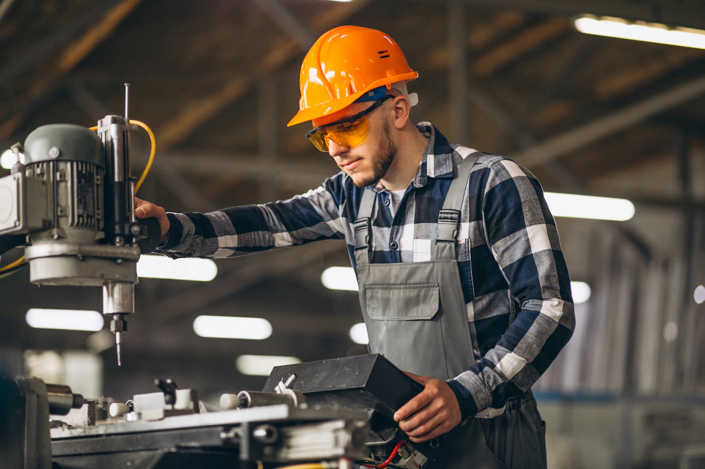

Apa itu teknik sipil? Teknik sipil adalah bidang ilmu yang mempelajari perencanaan/perancangan, manufaktur, manajemen/pengelolaan,
dan konservasi dari beragam fasilitas dan sistem untuk mendukung sebuah kota, pedesaan, dan perkotaan.
2. Teknik Informatika
Teknik Informatika merupakan bidang ilmu yang mempelajari bagaimana menggunakan teknologi komputer secara optimal guna menangani masalah transformasi atau pengolahan data dengan proses logika.
Di Jurusan Teknik Informatika kamu akan mempelajari berbagai prinsip terkait ilmu komputer mulai dari proses perancangan, pengembangan, pengujian, hingga evaluasi sistem operasi perangkat lunak.
Selama kuliah kamu akan banyak mengkaji pemrograman dan komputasi, dan dibekali pula dengan keterampilan merancang perangkat lunak.
3. Teknik Elektro
Teknik Elektro merupakan bidang ilmu yang mempelajari listrik dan aplikasinya dalam kehidupan sehari-hari.
dengan ilmu dan pengetahuan seputar konsep, perancangan, pengembangan, serta produksi perangkat listrik dan elektronik.
Kamu juga akan banyak membahas metode pembangkit dengan sumber energi baru, metode penyimpanan energi, dan metode kontrol penghematan energi.
4. Teknik Mesin

Jurusan Teknik Mesin tidak melulu soal mesin motor, mobil, dan kegiatan perbengkelan lainnya.
Tapi kamu juga akan belajar hal-hal terkait konversi energi, konstruksi dan perancangan, teknik produksi, juga material.
Memang benar sih, secara umum kamu akan mempelajari mesin dengan menggunakan dasar fisika dan matematika, seperti pergerakan mesin, aliran air untuk mesin, material dan desain mesin,
elemen penting seperti roda gigi dan sumber mata air, metode pengolahan, metode produksi, pengendalian melalui komputer, dsb.
5. Arsitektur
Arsitektur sendiri merupakan cabang ilmu teknik dan seni dalam merancang bangunan dan struktur.
Mempelajari arsitektur sama seperti belajar menciptakan sebuah ruang yang memiliki karakteristik tertentu seperti kegunaan,
kekokohan, dan keindahan.